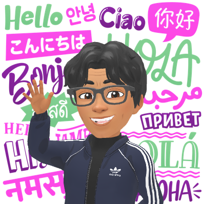
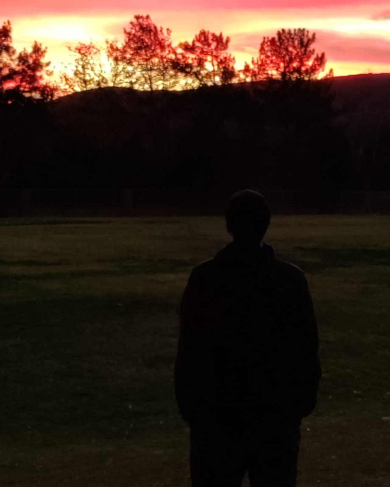

Scroll Down

I am a Computer Science student passionate about building innovative
and impactful technology through creativity, problem solving, and
continuous learning. Whether it's developing projects during
hackathons, leading technical workshops, or teaching students how to
code, I enjoy creating meaningful solutions while helping others grow
along the way.
My experience spans software development, technical leadership, and
education, with a strong focus on collaboration, adaptability, and
real world problem solving. Beyond coding, my background in martial
arts and cubing has strengthened my discipline, leadership, and
perseverance — qualities I bring into every project and challenge I
take on.
Scroll Down
Sep 2024 - Present
Jun 2025 - Aug 2025
Nov 2022 - Aug 2024
Dec 2021 - Aug 2024
Scroll Down
Developed by a team of four during a 36 hour county wide hackathon with 200+ participants, LensCook analyzes photographed ingredients and recommends healthy recipes using computer vision and real time API integration.
View on GitHub →Developed during a 48 hour international hackathon, SLFA uses image recognition and machine learning to help users learn American Sign Language through interactive gesture detection, alphabet training, and common phrase recognition.
View on GitHub →A secure multi-agent AI workflow system that automates tasks like email management, scheduling, and organization using delegated authentication, hosted AI models, and modular agent orchestration.
View on GitHub →Built a retro-inspired top-down racing game featuring modular game state management for menus, settings, vehicle/track selection, and gameplay flow. Developed custom driving physics with distinct vehicle handling behaviors, real-time lap timing, dynamic track generation, sprite-based steering animations, and integrated audio systems to create a polished arcade-style racing experience. Focused on responsive controls, scalable architecture, and smooth gameplay performance.
View on GitHub →
Developed a real-time facial recognition system that detects and identifies individuals through live webcam input by comparing faces against uploaded reference images. Implemented automated logging of detection events, including names, timestamps, and dates, to a cloud database (Firebase) for persistent tracking and monitoring. Designed with a modular and scalable architecture focused on efficient recognition workflows, real-time processing, and seamless database integration.
⚠️ Built for educational and demonstrative purposes only. Please be considerate of privacy laws and ethical use of facial recognition technology.
Designed and developed a fully responsive personal portfolio website featuring smooth scrolling navigation, animated typing effects, dark/light theme switching, interactive project showcases, and a modern glassmorphism inspired UI to highlight projects, experience, and technical skills.
View on GitHub →